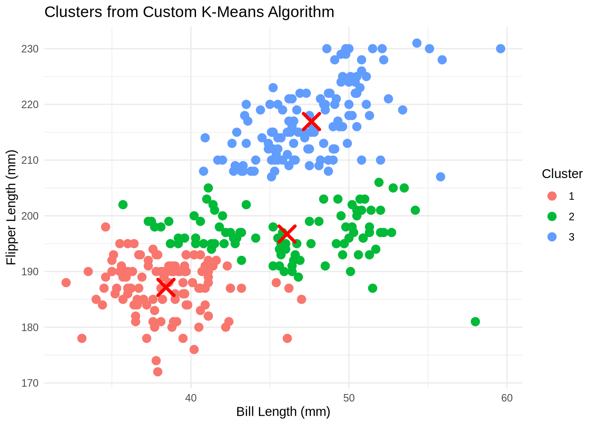
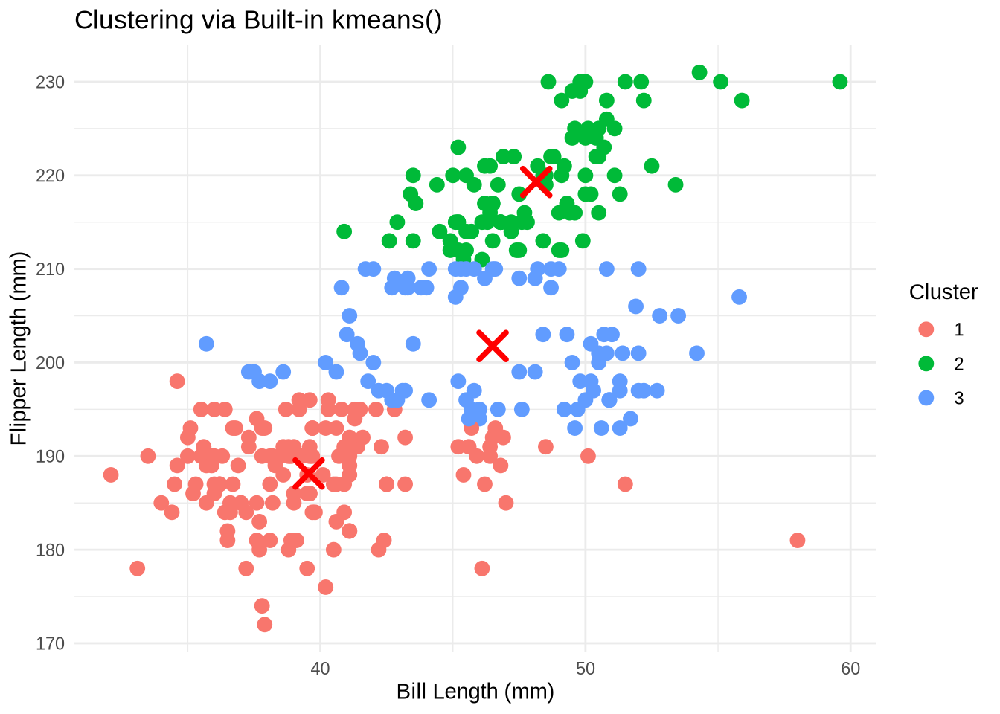
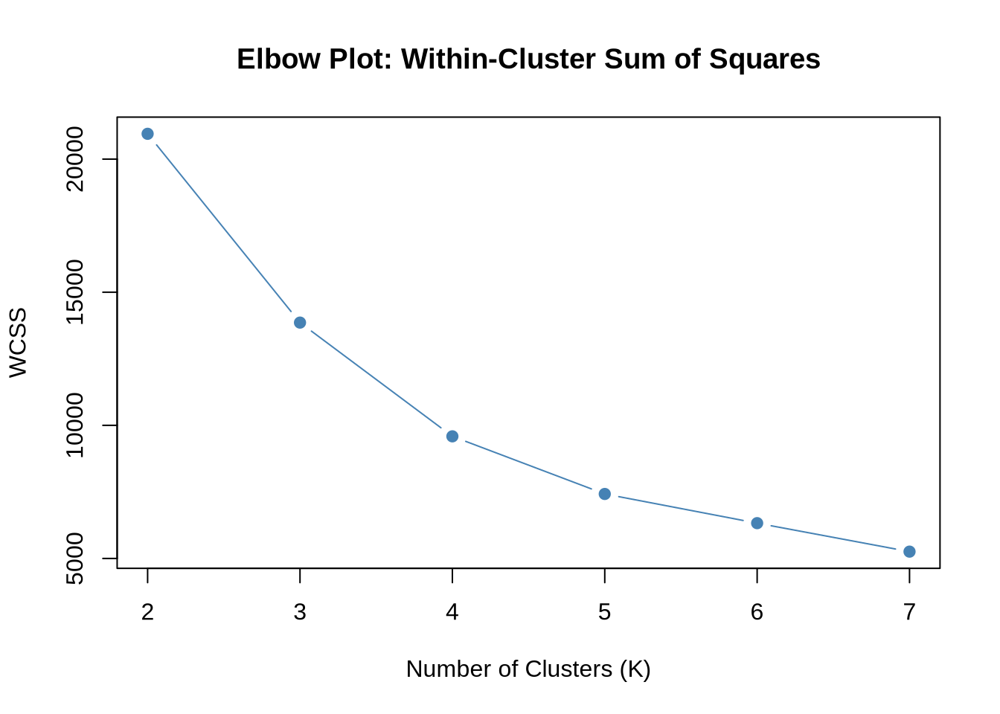
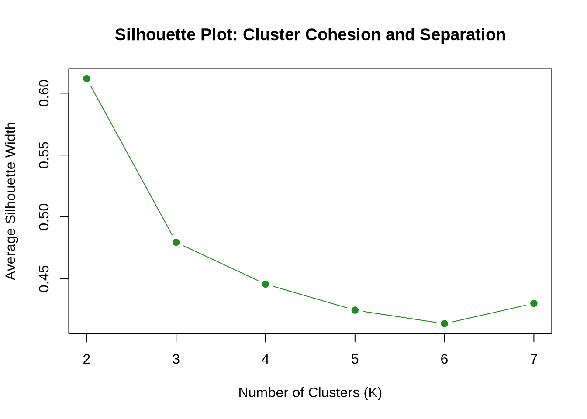
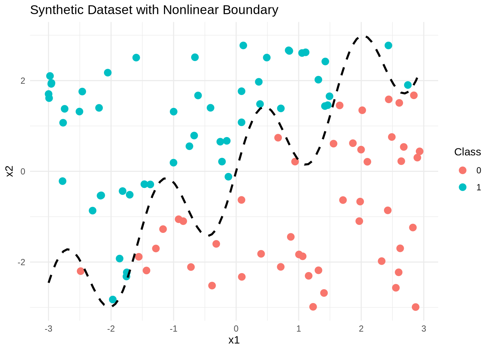
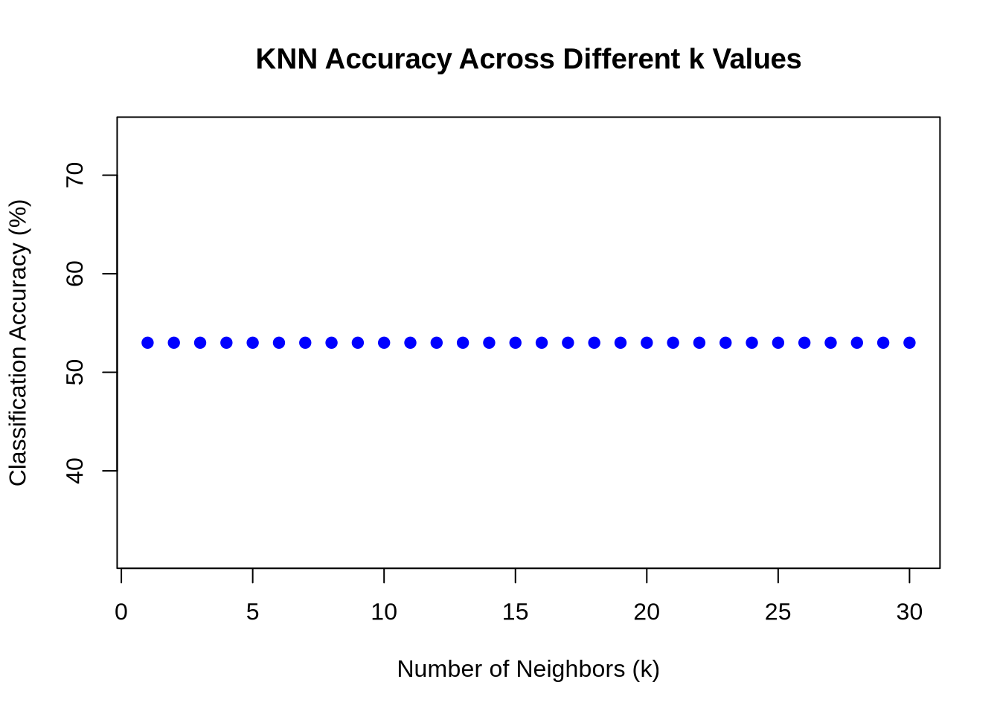

install.packages(c("ggplot2", "purrr", "cluster", "class"))Updating HTML index of packages in '.Library'Making 'packages.html' ... donelibrary(purrr)
library(ggplot2)
library(cluster)
library(class)Ouwen Jia
June 11, 2025
We use the Palmer Penguins dataset, focusing on bill_length_mm and flipper_length_mm.
Updating HTML index of packages in '.Library'Making 'packages.html' ... done'data.frame': 333 obs. of 8 variables:
$ species : chr "Adelie" "Adelie" "Adelie" "Adelie" ...
$ island : chr "Torgersen" "Torgersen" "Torgersen" "Torgersen" ...
$ bill_length_mm : num 39.1 39.5 40.3 36.7 39.3 38.9 39.2 41.1 38.6 34.6 ...
$ bill_depth_mm : num 18.7 17.4 18 19.3 20.6 17.8 19.6 17.6 21.2 21.1 ...
$ flipper_length_mm: int 181 186 195 193 190 181 195 182 191 198 ...
$ body_mass_g : int 3750 3800 3250 3450 3650 3625 4675 3200 3800 4400 ...
$ sex : chr "male" "female" "female" "female" ...
$ year : int 2007 2007 2007 2007 2007 2007 2007 2007 2007 2007 ...To explore the behavior of the K-Means clustering algorithm in detail, we implemented a custom version from scratch rather than relying on pre-built functions. This approach helps visualize the iterative nature of K-Means, where cluster centers are repeatedly updated based on distance calculations and group reassignments until convergence. The function below initializes random centroids, assigns data points to the nearest cluster, and updates the cluster means iteratively while tracking the history of centroids for potential animation or diagnostics.
run_kmeans <- function(df, k, max_iters = 100, random_state = 42) {
set.seed(random_state)
total_points <- nrow(df)
centers <- df[sample(seq_len(total_points), k), , drop = FALSE]
snapshots <- list(centers)
for (step in seq_len(max_iters)) {
# Compute pairwise distances
combined <- rbind(centers, df)
dmat <- as.matrix(dist(combined))[1:k, (k+1):(k+total_points)]
# Assign cluster based on nearest center
assigned <- apply(dmat, 2, which.min)
# Update centers
updated <- map_dfr(1:k, function(i) colMeans(df[assigned == i, , drop = FALSE]))
snapshots[[step + 1]] <- updated
# Stop if convergence
if (all(abs(as.matrix(centers) - as.matrix(updated)) < 1e-6)) break
centers <- updated
}
return(list(assignments = assigned, centers = centers, trace = snapshots))
}Before visualizing the clusters, we apply our previously defined K-Means function to the cleaned dataset. This involves converting the relevant features into a numeric matrix format, running the algorithm with k = 3, and then appending the resulting cluster labels to the original dataset for plotting and evaluation.
After clustering, we use ggplot2 to create a scatter plot that illustrates how the data points are grouped. Each point is colored by its assigned cluster, and the final centroids are overlaid as red “X” marks. This helps visually assess how well the algorithm separated the data based on the selected features.
input_matrix <- as.matrix(penguins_clean)
kmeans_result <- run_kmeans(input_matrix, k = 3)
penguins_clean$label_custom <- factor(kmeans_result$assignments)
final_centers <- as.data.frame(kmeans_result$centers)
colnames(final_centers) <- colnames(penguins_clean[, c("bill_length_mm", "flipper_length_mm")])
# Plot clusters with centroids
ggplot(penguins_clean, aes(x = bill_length_mm, y = flipper_length_mm, color = label_custom)) +
geom_point(size = 3) +
geom_point(data = final_centers,
aes(x = bill_length_mm, y = flipper_length_mm),
color = "red", shape = 4, size = 5, stroke = 2) +
labs(title = "Clusters from Custom K-Means Algorithm",
x = "Bill Length (mm)", y = "Flipper Length (mm)",
color = "Cluster") +
theme_minimal()
To validate our custom algorithm, we compare its results against R’s built-in kmeans() function. We use the same number of clusters and input features to ensure consistency, and visualize the resulting groupings. The centroids computed by kmeans() are also added to the plot, allowing for a side-by-side visual and structural comparison.
# Run R's native kmeans function
result_builtin <- kmeans(input_matrix, centers = 3)
penguins_clean$label_builtin <- factor(result_builtin$cluster)
# Format the built-in centroids for plotting
builtin_centers <- as.data.frame(result_builtin$centers)
colnames(builtin_centers) <- colnames(penguins_clean[, c("bill_length_mm", "flipper_length_mm")])
# Visualization of built-in clustering results
ggplot(penguins_clean, aes(x = bill_length_mm, y = flipper_length_mm, color = label_builtin)) +
geom_point(size = 3) +
geom_point(data = builtin_centers,
aes(x = bill_length_mm, y = flipper_length_mm),
color = "red", shape = 4, size = 5, stroke = 2) +
labs(title = "Clustering via Built-in kmeans()",
x = "Bill Length (mm)", y = "Flipper Length (mm)",
color = "Cluster") +
theme_minimal()
To determine a suitable number of clusters for the penguin dataset, we performed quantitative evaluation using two well-known methods: the Within-Cluster Sum of Squares (WCSS) and the Silhouette Score. WCSS measures compactness by quantifying the total variance within each cluster, while the silhouette score captures how well-separated the clusters are relative to one another. By plotting these metrics for a range of cluster values (K = 2 to K = 7), we can assess at which point increasing the number of clusters yields diminishing returns and observe where cluster cohesion and separation are maximized.
# Load necessary libraries
library(cluster) # for silhouette()
library(ggplot2)
# Read and clean the dataset
penguins_raw <- read.csv("palmer_penguins.csv")
penguins_trimmed <- na.omit(penguins_raw[, c("bill_length_mm", "flipper_length_mm")])
# Initialize empty vectors for WCSS and silhouette scores
wcss_values <- numeric()
silhouette_scores <- numeric()
# Loop through cluster counts from 2 to 7
for (k in 2:7) {
model_k <- kmeans(penguins_trimmed, centers = k, nstart = 25)
wcss_values[k - 1] <- model_k$tot.withinss
sil <- silhouette(model_k$cluster, dist(penguins_trimmed))
silhouette_scores[k - 1] <- mean(sil[, 3])
}
# Plot WCSS (elbow method)
plot(2:7, wcss_values, type = "b", pch = 19, col = "steelblue",
xlab = "Number of Clusters (K)", ylab = "WCSS",
main = "Elbow Plot: Within-Cluster Sum of Squares")
# Plot silhouette scores
plot(2:7, silhouette_scores, type = "b", pch = 19, col = "forestgreen",
xlab = "Number of Clusters (K)", ylab = "Average Silhouette Width",
main = "Silhouette Plot: Cluster Cohesion and Separation")
The plot clearly shows that the highest silhouette score occurs at K = 2, with an average silhouette width exceeding 0.60. This suggests that when the dataset is partitioned into two clusters, the resulting groupings are both tight and well-separated — the ideal condition for clustering quality.
As the number of clusters increases beyond 2, the average silhouette score steadily declines, indicating that the new cluster boundaries introduce less coherent groupings or lead to more overlap between clusters. Notably, the score drops sharply at K = 3, and continues to decline until K = 6, with only a minor rebound at K = 7 — but still far below the peak at K = 2.
Based on this silhouette plot alone, the optimal number of clusters for this dataset — when considering only bill length and flipper length — is most likely K = 2, as it offers the best balance between intra-cluster cohesion and inter-cluster separation. This result may differ from the WCSS (elbow method) interpretation, which should be considered in combination for a more robust decision.
To illustrate the behavior of the K-Nearest Neighbors algorithm, I began by generating a synthetic dataset consisting of two features (x1 and x2), each sampled from a uniform distribution over the interval [-3, 3]. A non-linear decision boundary was defined using the function sin(4x1) + x1, and the binary outcome variable was determined by whether x2 lay above or below this boundary. The resulting dataset simulates a classification problem with a complex boundary.
# Create training data
set.seed(42)
n_train <- 100
feature1 <- runif(n_train, -3, 3)
feature2 <- runif(n_train, -3, 3)
boundary_train <- sin(4 * feature1) + feature1
labels_train <- ifelse(feature2 > boundary_train, 1, 0) |> as.factor()
data_train <- data.frame(x1 = feature1, x2 = feature2, y = labels_train)To understand the separation between classes, I plotted the synthetic training data in a scatterplot. The points were colored by class membership, and a dashed curve representing the boundary function was overlaid to show the non-linear dividing line.
ggplot(data_train, aes(x = x1, y = x2, color = y)) +
geom_point(size = 3) +
stat_function(fun = function(x) sin(4 * x) + x, color = "black", linetype = "dashed", size = 1) +
labs(title = "Synthetic Dataset with Nonlinear Boundary",
x = "x1", y = "x2", color = "Class") +
theme_minimal()Warning: Using `size` aesthetic for lines was deprecated in ggplot2 3.4.0.
ℹ Please use `linewidth` instead.
To evaluate generalization, a test dataset was generated using the same process but initialized with a different random seed. This ensured that the test data was independently sampled while following the same structural rule for classification.
A custom function was developed to implement the KNN algorithm from scratch. For each point in the test set, Euclidean distances to all training points were calculated, the k nearest neighbors identified, and the most common class among them selected as the predicted label.
# Custom implementation of KNN
knn_from_scratch <- function(x_train, y_train, x_test, k = 5) {
predictions <- character(nrow(x_test))
for (i in 1:nrow(x_test)) {
dist_vals <- sqrt(rowSums((t(t(x_train) - x_test[i, ]))^2))
neighbor_idx <- order(dist_vals)[1:k]
neighbor_labels <- y_train[neighbor_idx]
predictions[i] <- names(sort(table(neighbor_labels), decreasing = TRUE))[1]
}
return(as.factor(predictions))
}
# Run KNN manually for k = 5
manual_results <- knn_from_scratch(x_train = data_train[, 1:2],
y_train = data_train$y,
x_test = data_test[, 1:2],
k = 5)To verify the correctness of the manual implementation, I compared its predictions with the results of R’s built-in class::knn() function. A confusion matrix was used to confirm that both methods produced closely aligned classifications.
To explore how model performance changes with different neighborhood sizes, I ran the manual KNN classifier for values of k from 1 to 30. For each run, I computed the classification accuracy on the test set and plotted the results to observe the relationship between k and predictive success.
# Track accuracy across different k values
k_values <- 1:30
accuracy_scores <- numeric(length(k_values))
true_y <- factor(data_test$y, levels = levels(data_train$y))
for (k in k_values) {
preds_k <- knn_from_scratch(x_train = data_train[, 1:2],
y_train = data_train$y,
x_test = data_test[, 1:2],
k = k)
preds_k <- factor(preds_k, levels = levels(data_train$y))
accuracy_scores[k] <- mean(preds_k == true_y) * 100
}
# Plot accuracy vs. k
plot(k_values, accuracy_scores, type = "b", pch = 19,
xlab = "Number of Neighbors (k)",
ylab = "Classification Accuracy (%)",
main = "KNN Accuracy Across Different k Values",
col = "blue")
The plot provides insight into how the KNN algorithm performs as k increases. Lower values of k typically lead to higher variance (more sensitive to noise), while higher values may result in over-smoothing. The optimal value of k is suggested by the peak of the accuracy curve, indicating the best trade-off between bias and variance in this non-linear classification setting.